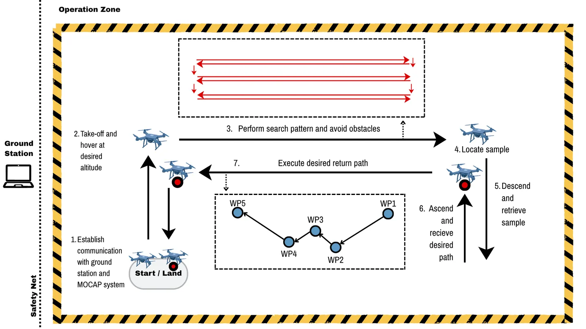
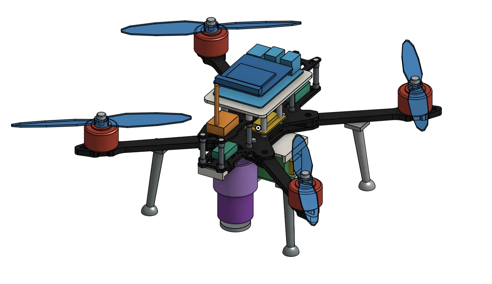
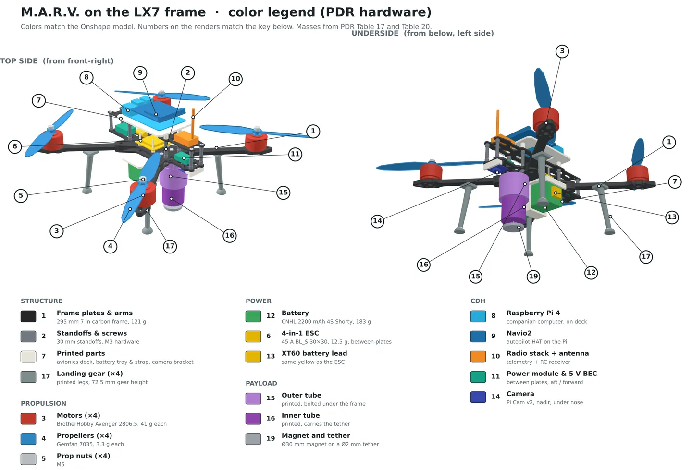

Senior capstone · AERSP 403A/B · Fall 2026 to Spring 2027
M.A.R.V.: an autonomous drone that finds and recovers a payload
M.A.R.V., the Autonomous Payload Recovery Vehicle, is the senior capstone for AERSP 403A/B at Penn State, built by a team of four. It is a prototype for NASA-style Mars sample return: a quadcopter that flies one fully autonomous run of 300 seconds or less inside an indoor arena with no GPS, searches an 18 by 30 ft area, tells the real package from decoys by reading a code on it, picks it up, and flies home along a return path that the ground station uploads while it is already in the air. It has to weigh under 1 kg, cost under $350, and run on a Raspberry Pi 4 and a Navio2 board.
- Status
- In progress PDR and CDR done; risk matrix and QR software under way
- My part
- Structures and software on a team of four. I designed the payload mechanism and produced the mass, centre-of-gravity and inertia analysis.
- Team
- Team of 4. Every subsystem has an owner; I name which parts are mine.
- Tools
- Onshape and CAD · FDM printing in PLA · Raspberry Pi 4 and Navio2 · ArduPilot · OptiTrack MOCAP
Where the project stands · November 2026
PDR, the payload mechanism and CDR are done. Right now we are on the risk matrix and the QR-reading software.
- DoneMission definitionSeptember 15, 2026
- DonePreliminary design review (PDR)October 13, 2026
- DonePayload mechanismMy design piece
- DoneCritical design review (CDR)
- NowRisk matrix
- NowQR-reading software
Making it work across camera height, image resolution and frame rate.
01The mission
Fly alone, find the right package, bring it home
The need comes from NASA's work on Ingenuity-derived autonomous vehicles for Mars. A sample-return helicopter has to move without external navigation, tell the right sample from the wrong ones, grab it, and accept new instructions mid-flight without a human in the loop. M.A.R.V. is a small indoor stand-in for that: three capability gaps, one vehicle.
Our job is to build it to the capstone competition's rules: the most mission goals completed, with the least weight and cost. That strategy shaped every choice below. Each phase of the run is time-limited, and a task that is not working is aborted so the remaining goals still count.
- ≤ 300 sFor one autonomous run, from power-on to disarm.
- < 1 kgMaximum vehicle weight.
- $350Total budget, from US vendors only.
- No GPSIndoor position comes from motion capture (MOCAP).
One run, in seven steps
Pre-flight
Power on and get a MOCAP lock. Before any flight testing the vehicle also has to pass a Flight Readiness Review under Penn State policy SY45.
Take off
Climb and fly to the search zone, with no operator input. A safety pilot holds an RC transmitter with an override and a kill switch, and touches it only if something goes wrong.
Search
Fly parallel back-and-forth lanes over the 18 by 30 ft area while the camera flags candidates. The pattern needs no complicated area partitioning and gives full coverage of a rectangle, at the price of repeated turns that add flight time.
Confirm
Drop low over a candidate and read the marker on it. A wrong code means a false sample, so the vehicle goes back to searching. The worst-case profile has three of these before the real package.
Retrieve
Descend to grab height, take the package, and check that it is really on board. A failed grab is detected and retried, up to three retries, four attempts in total.
New route
Hover while the ground station, a laptop on Wi-Fi, uploads the return path. The vehicle does not know its way home until it is already in the air.
Return
Fly the uploaded path, land, and disarm. Telemetry (state, phase and video) goes to the ground station through every phase.


The requirements that matter most
| ID | The UAV shall |
|---|---|
| UAV-1 | take off and land autonomously, without operator input. |
| UAV-2 | navigate with the indoor localization system, with no GPS. |
| UAV-3 | tell the target package from other objects before retrieving it. |
| UAV-4 | keep the payload through flight and landing until intentionally released, and detect a failed grab and retry (UAV-4.1). |
| UAV-5 | receive and fly a return-path update sent mid-flight. |
| UAV-6 | send state, phase and video telemetry to ground control through every phase. |
02The vehicle
A seven-inch quadcopter, sized to carry a 100 g package
The design is a carbon-fiber quadcopter with a 295 mm, seven-inch frame, four motors with seven-inch propellers, a Raspberry Pi 4 and Navio2 flight computer, a camera mounted under the frame, and the magnetic grabber hanging below. Everything is sized for a thrust-to-weight ratio of at least 1.5 at 0.8 kg.


| Part | Selection | Qty | Unit mass | Unit cost |
|---|---|---|---|---|
| Frame | 295 mm seven-inch carbon-fiber FPV frame | 1 | 121 g | $34.99 |
| Motors | BrotherHobby Avenger 2806.5 | 4 | 41 g | $25.99 |
| Propellers | GEMFAN 7035 | 4 | 3.3 g | $4.20 |
| Speed controller | 45 A four-in-one ESC | 1 | 12.5 g | $32.90 |
| Battery | CNHL Black Series 4S 2200 mAh | 1 | 183 g | $18.00 |
| Avionics | Raspberry Pi 4 and Navio2, RC receiver, power module, wiring | 1 | about 100 g | not priced |
| Payload mechanism | Magnetic drop grabber (my design) | 1 | estimate at PDR | not priced |
The five priced parts come to $206.65 against the $350 budget. Avionics and the payload mechanism are not priced in that table. Masses for those two were estimates at PDR; the mass budget below carries the payload mechanism at 80 g.
Mass budget, against the 1 kg limit
| Subsystem | Estimate | Margin | Reserve | With reserve |
|---|---|---|---|---|
| Propulsion | 177.2 g | 5% | 8.86 g | 186.06 g |
| Power | 195.5 g | 10% | 19.55 g | 215.05 g |
| Payload | 80 g | 20% | 16 g | 96 g |
| Structure | 121 g | 5% | 6.05 g | 127.05 g |
| Command and data | 100 g | 10% | 10 g | 110 g |
| Total | 673.7 g | 60.46 g | 734.16 g |
03Choosing the parts
Every part came out of a weighted trade study
The team scored real candidates against weighted criteria. Each criterion is scored from 0 for the worst option to 1 for the best, multiplied by its weight, and summed. Pick a subsystem to see the options, the weights and the result. These studies are team work; the payload mechanism study is the one that led to my design.
Battery: a 4S pack of about 2200 mAh
The target was a 4S (14.8 V) pack of at least 2000 mAh plus a buffer, about 2200 mAh. Each criterion is scored from 0 (worst option) to 1 (best), multiplied by its weight and summed.
| Criterion | Weight | OVONIC 4S 2200 mAh 130C | CNHL Black Series 4S 2200 mAh 40C | ATTU 4S 2200 mAh 45C |
|---|---|---|---|---|
| Weight | 40% | 200 g | 183 g | 180 g |
| Cost | 30% | $20 | $18 | $31 |
| Volume | 30% | 6.0 in³ | 5.7 in³ | 5.3 in³ |
| Final score | 0.254 | 0.769 | 0.700 | |
| Rank | 3 | 1 | 2 |
Selected: CNHL Black Series 4S 2200 mAh 40C. The CNHL pack nearly covers five worst-case flights, is very light (183 g) and cheap ($18). Its drawback is that it has no reputation yet, which the team flagged.
Speed controller: a 45 A four-in-one board
Expected maximum current draw is 20 A with a 1300 kV motor on a 4S pack. Reviews carry half the weight; the team noted they are very important for boards.
| Criterion | Weight | 45A 4-in-1 ESC 2-6S BLHeli_S | Racerstar 35A BLHeli_S 4-in-1 | V45A Lite ESC 45A |
|---|---|---|---|---|
| Weight | 10% | 12.5 g | 13 g | 13 g |
| Cost | 40% | $32.90 | $42.00 | $22.90 |
| Reviews (rating out of 1) | 50% | 0.8 | 0.9 | none |
| Final score | 0.735 | 0.500 | 0.400 | |
| Rank | 1 | 2 | 3 |
Selected: 45A 4-in-1 ESC 2-6S BLHeli_S. Four out of five stars across 23 reviews, and the second cheapest option at $33.
Frame: a 295 mm carbon-fiber FPV frame
A qualitative pass came first, weighing weight, cost, durability, ease of getting it, repairability and space. It favored buying an FPV frame and adding custom plates. The quantitative study then compared three real frames.
| Criterion | Weight | Readytosky 295 mm HD 7-inch kit | 295 mm 7-inch carbon-fiber FPV frame | YoungRC F450 kit |
|---|---|---|---|---|
| Weight | 40% | 141 g | 121 g | 394 g |
| Cost | 30% | $37.99 | $34.99 | $21.99 |
| Space for avionics (1 = roomy) | 10% | 0 | 0 | 1 |
| Durability (1 = carbon fiber) | 20% | 1 | 1 | 0.5 |
| Final score | 0.571 | 0.656 | 0.400 | |
| Rank | 2 | 1 | 3 |
Selected: 295 mm 7-inch carbon-fiber FPV frame. The lightest frame at 121 g, second cheapest, and carbon fiber. It is tight on space, with potential for custom mountings. The structures requirement is a bare frame of no more than 150 g.
Motors: BrotherHobby Avenger 2806.5
The requirement behind this study is at least 300 g of static thrust per motor and propeller at the minimum battery voltage, and a thrust-to-weight ratio of at least 1.5 for a 0.8 kg vehicle.
| Criterion | Weight | Readytosky 2807 1300 kV | EMAX ECO II 2807 1300 kV | BrotherHobby Avenger 2806.5 |
|---|---|---|---|---|
| Weight | 50% | 53 g | 47.5 g | 41 g |
| Cost | 30% | $10.99 | $19.49 | $25.99 |
| Efficiency at 300 g thrust | 20% | 5.67 g/W | 5.41 g/W | 5.62 g/W |
| Final score | 0.500 | 0.359 | 0.662 | |
| Rank | 2 | 3 | 1 |
Selected: BrotherHobby Avenger 2806.5. The lightest and the most expensive. The team traded cost for about 50 g of weight across four motors, for more flight time, better efficiency and a better chance of completing the mission.
Propellers: GEMFAN 7035
Larger propellers are more efficient, with diminishing returns, but they need a much bigger and heavier frame and turn at lower RPM with less maneuverability. The study compared two seven-inch propellers.
| Criterion | Weight | GEMFAN 7035 | GEMFAN 7042 |
|---|---|---|---|
| Weight | 40% | 3.29 g | 5.49 g |
| Cost | 40% | $4.20 | $5.48 |
| Control | 20% | low | high |
| Final score | 0.800 | 0.200 | |
| Rank | 1 | 2 |
Selected: GEMFAN 7035. The lightest and the least expensive option.
Payload mechanism: a magnetic drop grabber
This one was qualitative, because the candidates were concepts and not parts on a shelf. Low weight meant an estimated mass under 100 g and low cost under $30. Low complexity meant little to no moving parts and no electronics. Low size meant it could sit outside the avionics and battery space.
| Criterion | Magnetic drop grabber | Morphing grippers |
|---|---|---|
| Weight | Low | Medium |
| Cost | Low | Medium |
| Complexity | Low | High |
| Size | Low | High |
Selected: the magnetic drop grabber. It is the part of the vehicle I designed, and it has its own section below.
04How it flies itself
Three functions, one flight computer
The mission definition broke the job into three functions. The flight computer, a Raspberry Pi 4 on a Navio2 board running ArduPilot, handles all of them. Position comes from motion capture, attitude from the onboard IMU, and the camera feeds the vision software that finds and checks the package.
Fly autonomously
- 1.1Take off
- 1.2Land
- 1.3Execute the search pattern
- 1.4Navigate the return path
- 1.5Enter the operational zone
- 1.6Control attitude and altitude
- 1.7Avoid obstacles
Recover the payload
- 2.1Identify the sample
- 2.2Locate objects
- 2.3Execute the recovery maneuver
- 2.4Check the payload, and re-recover if needed
Communicate and process data
- 3.1Receive inputs: manual control, return path, MOCAP
- 3.2Process IMU, sensor, battery and object-detection data
- 3.3Check system status
- 3.4Send state, phase and video data
- 3.5Re-evaluate


05Payload mechanismMy part
A magnet that takes the package without a servo, then with one
The mechanism has to take a 100 g package, a steel plate on top for a magnet to hold, and carry it through flight and landing, without moving the vehicle's centre of mass or its weight much (PYLD-1 and PYLD-2). I designed it. At PDR the team chose a magnetic drop grabber over morphing grippers, and I took that concept through two designs.
The earlier pickup left 1.7 mm to the battery tray and 1.3 mm to the camera, and a package that swings in flight needs more room than that. So the mechanism had to get slimmer and still come in under the 80 g budget.
Passive or powered? v4 in October 2026, v5 in November
Passive ratchet v4
- No servo, no wiring and nothing to command.
- Landing on the package does the lifting.
- The vehicle has to land squarely on the package.
- Travel is limited to the stroke of the tube.
Servo winch v5
- 150 mm of reach, five times the ratchet's 30 mm.
- The puck is designed to seat itself in a conical dock.
- Adds an FS90R servo, a spool and braided line.
- One more thing to command in flight.
Why I started passive: it removes the most parts. If landing on the package could do the job, the servo's mass and wiring never had to enter the budget. v4 is two PLA tubes around a 30 mm N52 magnet. Landing pushes the inner tube up through ten 3 mm clicks and pawls hold it. Why I then built a winch: reach costs a servo, a spool and some way to put the magnet back in the same place every cycle. The seat was the part I cared about most, so the puck has a cone on top and winding it in pulls it into a matching dock.
| Check | Earlier pickup | v4 ratchet |
|---|---|---|
| Clearance to battery tray | 1.7 mm | 4.5 mm |
| Clearance to camera | 1.3 mm | 4.3 mm |
| Mechanism mass, against an 80 g budget | n/a | 36.3 g |
A 0.2 mm problem
In v5.1 the magnet face sat only 0.2 mm below the rim of its printed housing, close enough to flush that the package's steel plate pressed on the plastic rim. I wanted the magnet to carry the package and the print to carry nothing. In v5.2 I dropped the magnet to 3 mm below the rim, then checked the change against the team's Onshape frame model and the FS90R drawing.
The change bought clearance under the battery tray and cost something too: the rim no longer braces the package.
Docked puck, side view
| Check | v5.1 | v5.2 |
|---|---|---|
| Magnet face below housing rim | 0.2 mm | 3 mm |
| Package to battery tray | 3.9 mm | ≈ 6.7 mm |
| What the steel plate rests on | printed rim | magnet only |
| Rim braces the package | yes | no |
A check that avoided a redesign
The pickup magnet sits 13 to 15 cm from the Navio2's magnetometer. I estimated its field at the board at roughly 3 to 6 times Earth's Estimate. Before changing anything I checked whether the vehicle depends on that sensor. It does not: heading comes from motion capture. A fix for a sensor nobody reads would have spent mass for nothing, so the pickup stayed where it was. On an aircraft that steers by compass, the same pickup would need rework.
06Stability and control analysisMy part
What a 100 g package does to a 674 g vehicle
A package that is 13% of the vehicle's mass, hung below it, shifts the centre of gravity and changes how hard the vehicle is to rotate. One set of mass properties would hide that, so I built the mass budget above, took each part from the CAD model at its budgeted mass, and worked out the centre of gravity and the moments of inertia for the empty vehicle and the loaded one. I presented them as the stability and control section of the preliminary design review.
Empty and loaded
| Property | Empty | Loaded | Change |
|---|---|---|---|
| Mass | 673.7 g | 773.7 g | +15% |
| CG, forward | −6.2 mm | +0.7 mm | +6.9 mm |
| CG, right | +0.1 mm | +0.1 mm | 0 |
| CG, up | −0.8 mm | −7.9 mm | −7.1 mm |
| CG below the propellers | 29.8 mm | 36.9 mm | +7.1 mm |
| Pitch inertia, Ixx×10⁻³ kg·m² | 3.80 | 4.37 | +15% |
| Roll inertia, Iyy | 3.36 | 3.69 | +10% |
| Yaw inertia, Izz | 6.12 | 6.43 | +5% |
What the numbers mean for the vehicle
- Gripping the package moves the CG about 7 mm forward and 7 mm lower. Loaded, it sits within a millimeter of the frame centre side to side and front to back, so the vehicle stays balanced on its four motors.
- Pitch inertia rises 15% and roll 10%. The same control torque turns the loaded vehicle more slowly, so the flight controller has to be tuned and tested both empty and loaded.
- Yaw inertia is the largest and barely moves, up 5%. Turning flat swings all four motors around the centre. Pitch is 13% above roll because the heavy parts sit front to back.
07What we are on now
The risk matrix, and a QR reader that works at every height
QR-reading software
The vehicle decides which package is the real one by reading a QR code on it. In the flight profile it searches at about 6 ft, drops to about 3 ft to check a candidate, and grabs at about 0.42 ft, so the code has to be readable from several heights while the Raspberry Pi also runs everything else. We are working on how to make it read reliably across camera height, image resolution and frame rate, and how to tune the three together. No results are on this page yet.
Select a link in the diagram, or a button, to see how two of the settings pull on each other.
Risk matrix
The team is building the project's risk matrix now. For context, these are the operating conditions documented at PDR that bear on risk.
| Condition | What it affects |
|---|---|
| Solid floors and netted walls | Potential damage during a crash. |
| Multiple false samples | The search and identification algorithm. |
| The MOCAP system | Position verification, and a limit on the search height. |
| Access to electronics and battery | How easily the vehicle can be re-soldered or recharged. |
| The drone-to-base link | Software and interface design for sending information. |
| Flight Readiness Review, policy SY45 | What has to be true before any flight testing. |
08Results and limits
What this page does and does not show
| Item | What this page has | What it does not have |
|---|---|---|
| Vehicle mass | The PDR budget and CAD properties: 673.7 g, 734 g with reserve. | A weighed vehicle. |
| Mission performance | The worst-case profile: 212 s and 5.06 Wh. | A flown run. The profile is a plan. |
| Payload mechanism | Two designs and a revision, with clearances and mass from CAD. | Measured holding or release forces. The ratchet's pawl forces (about 1.5 N to push a click, 5 N to pull free) came from a beam model. |
| QR reading | The problem and the three settings. | Test results. |
| The inertia numbers | CAD values at PDR, with a stated method. | An update for the latest frame and mechanism revision. |
09What I took from it
Four things I will carry into the next design
- Put the numbers first.A mass budget and two clearances decided the v4 design before anything was printed.
- Check what a change touches.A magnet is a payload part until it sits 14 cm from a compass. Asking early turned a possible redesign into a note.
- Every fix costs something.Dropping the magnet 3 mm bought clearance and gave up the rim's support. Writing the trade down matters as much as making it.
- Say what is measured and what is estimated.The pawl forces are a model until a printed pair says otherwise, and the review reads that way.